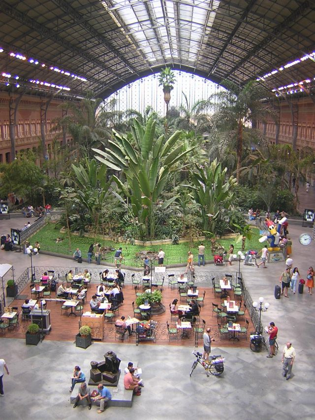
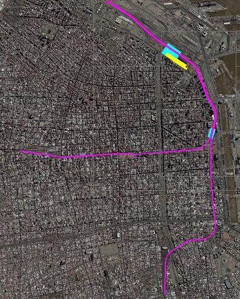
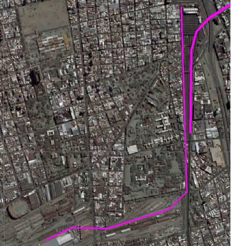
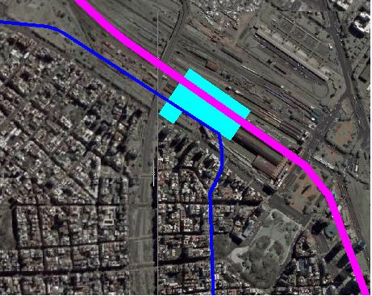
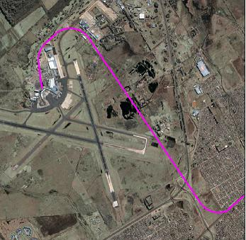

La vieja estación de Atocha en Madrid, justo al límite de la ciudad antigua,
al final del Paseo del Prado con su famoso museo, es ahora un agradable oasis
dentro de la trama urbana. Donde antes estaban los andenes ahora es un amplio
jardín semi-tropical con restaurantes y cafeterías donde la vieja bóveda
metálica hace de invernadero y provee un clima cálido, aún en invierno, a una
frondosa selva tropical. Además de los viajeros que vienen y van a la nueva
estación inmediatamente detrás, es habitual ver oficinistas comiendo un
bocadillo sentados en los senderos que atraviesan la selva.

Vista de la vieja estación de Atocha, ahora convertida en un oasis urbano,
un jardín de invierno en medio de la ciudad
Vista del interior de la vieja estación de Atocha. La zona verde entre el
pavimento y las palmas, es un estanque con peces y tortugas de agua.
El rediseño de este importante núcleo de transporte
ha mejorado notablemente la zona. La nueva estación, mucho más grande que la
original, construida en lo que antes había sido la playa de maniobras, ha sido
diseñada desde cero, sin estar condicionada por la estructura de la vieja,
para integrar distintos medios de transporte en varios niveles. Los buses
urbanos, que antes atascaban el tránsito frente a la vieja estación, ahora
disponen de dársenas adecuadas. El movimiento de los pasajeros se hace, en
muchos casos, en vertical entre los trenes soterrados, el metro (subte) aún
más abajo, el transporte de superficie y las playas de estacionamiento por
encima. La zona frente a la estación (actualmente en obras, por lo que no se
aprecia demasiado) ha ganado espacio y habitabilidad, más aún contando con el
Museo de Arte Reina Sofía y su nueva ampliación.
Pero quizás lo mejor de esta estación es lo que yace bajo ella. Una serie de
túneles, actualmente en proceso de ampliación, vinculan esta estación con otra
de las estaciones principales de Madrid, Chamartín. En su recorrido, comunica
a los viajeros ferroviarios con el transporte público de Madrid en varios
puntos, agilizando enormemente el tránsito urbano.
Si bien ninguna experiencia es directamente trasladable de un lugar a otro,
hay varias ideas que podrían adaptarse con gran ventaja para Buenos Aires.
Buenos Aires es grande, dicho esto sin fanfarronear: el área que ocupa el
conurbano bonaerense es grande. Usamos los ferrocarriles para los recorridos
largos, particularmente para llegar fuera de la Capital. Dentro de la Capital
usamos subtes y colectivos, pero al crecer la ciudad estamos usando un
servicio que es eficiente en trechos cortos en recorridos cada vez más
extensos. Extender los subtes es bueno, pero no suficiente. Si la línea A se
extendiera hasta Liniers, el recorrido desde Plaza de Mayo parecería
interminable. Falta un nivel intermedio entre el ferrocarril actual y el
subte. Es lo que en España llaman el servicio ferroviario de
Cercanías una suerte de `rápido´ o `expreso´ dentro de la zona
urbana.
Los proyectos de `terminar el ferrocarril en la General Paz´ no toman en
cuenta que dentro de los límites de la ciudad las distancias son tan grandes
que requieren un sistema de transporte tal como el ferrocarril provee dentro
de la Capital, aunque más flexible, mejor integrado y con más paradas. Es
cierto que será necesario, en la mayor parte del recorrido, hacer que el
ferrocarril circule soterrado para no interrumpir el tránsito de superficie,
pero el ferrocarril no sólo es necesario dentro de la ciudad sino que debería
ser ampliado, o al menos un equivalente a su servicio.
Es importante notar que el subte no puede satisfacer el tipo de servicio de
Cercanías. Como bien lo sabe un viajero que quiera ir de Belgrano al
centro, si es que vive equidistante de Av. Cabildo o la estación del Mitre,
llegará más rápido con el tren que con el subte, debido a la menor cantidad de
paradas intermedias. Allí radica la importancia de ofrecer y ampliar este
servicio rápido dentro de la misma Capital. Básicamente se trata de tener dos
servicios, uno rápido con pocas paradas y que cubra una gran distancia
(Cercanías) y otro con paradas frecuentes y viajes cortos en las zonas de
mayor densidad de pasajeros (subte).
Estos dos niveles de transporte deben estar mejor integrados. Las opciones
actuales de interconexión entre uno y otro: Retiro, Constitución, Once y otras
pocas, no son suficientes. La concentración de los trasbordos entre los dos
medios de transporte en unos pocos nodos de interconexión incrementa
innecesariamente la densidad del tránsito de vehículos y personas en esos
pocos lugares. Al mismo tiempo, el área de más densidad de personas, que no de
población dado que pocos viven allí, el microcentro, no tiene acceso a la red
de transporte ferroviario más que en un punto, Retiro (para los afortunados
que trabajan cerca) o a través de otros medios de transporte urbano.
En este sentido, unir mediante túneles las tres principales estaciones de la
Capital es imprescindible, los vínculos entre Retiro y Constitución, Retiro y
Once y entre Once y Constitución son de la mayor importancia. Estos enlaces no
deben ser pensados como una forma de llevar pasajeros de, digamos, Tigre a
Temperley pues no es de suponer que exista o vaya a existir suficiente
cantidad de pasajeros que justifique la inversión. Lo importante de este
enlace es ampliar las opciones de los pasajeros que llegan desde cualquier
punto de sus extensos recorridos al centro y hacerlo con el menor número
posible de trasbordos.
En este sentido, Madrid nos ofrece un interesante ejemplo, las opciones de
trasbordo entre el ferrocarril de Cercanías y el `metro´ (subte) son
múltiples, sin contar con que a muchos lugares se puede llegar directamente en
tren pues hay suficientes estaciones dentro de la ciudad. Mientras que en
Buenos Aires los viajeros que llegan a Retiro o Constitución sólo pueden hacer
combinación con la línea C (que por ello está sobresaturada), los que llegan a
Once sólo con la A (viajar en un subte que converge con un tren en Plaza
Miserere es toda una experiencia) y los de Lacroce sólo con la B, en Madrid,
las líneas ferroviarias urbanas intersectan las líneas de metro en varios
puntos, ofreciendo múltiples posibles puntos de trasbordo.
La conexión entre las cabeceras de las líneas de ferrocarril ofrece otra
ventaja que se puede ver claramente en Madrid o también en Barcelona. Los
servicios de Cercanías no tienen sus cabeceras dentro de la ciudad;
para estos servicios, Atocha o Chamartín no son más que otra parada
intermedia. Es como si en Buenos Aires hubiera servicios Tigre-Moreno o
Tigre-Temperley. Esto trae una gran ventaja en la utilización de recursos. El
tren, parado en su estación cabecera, es un desperdicio de recursos. Está
ocupando no sólo una plataforma en una zona donde el metro cuadrado de terreno
se cotiza caro sino que el servicio que provee está suspendido. Una parada que
podría reducirse a poco más de un minuto se extiende a 10 o más. Por otra
parte, la inversión del sentido de marcha obliga a reservar un tramo
importante de vía para que un tren saliente pueda ir por la misma vía por la
que entrará el siguiente tren hasta el cambio más cercano. Todo esto en el
peor lugar donde podría ocurrir, donde el número de pasajeros es el más alto,
donde el terreno es el más escaso y por ello costoso, donde, resumiendo, el
tiempo es oro, para el operador del servicio, para sus pasajeros y para el
dueño de la infraestructura.
Para facilitar aún más el tránsito de pasajeros, Madrid también ha ampliado
sus estaciones. En el caso de Atocha, dado su valor arquitectónico se ha
respetado el edificio original, trasladando la estación hacia atrás, sobre lo
que antes era la playa de maniobras. De la vieja estación de Chamartín no
queda nada evidente, la estación es completamente nueva, como también lo es la
estación de Sants, en Barcelona. Por la zona y su gran valor estético el
edificio principal de Retiro innegablemente encontrará mejores usos que el
actual. No es descartable la idea de usar sus grandes naves metálicas de forma
similar a Atocha, cambiando muchas de las placas opacas del techo por otras
transparentes y haciendo un gran jardín de invierno con bares y cafeterías en
un agradable entorno vegetal. Poder lograr un núcleo de comunicación dentro
mismo de la actual estación de Retiro sería difícil, costoso y seguramente
implicaría una pérdida en su valor arquitectónico, en otras palabras,
seguramente se arruinaría. Por ello, mejor hacerlo en otro sitio,
inmediatamente detrás.
En celeste se muestra la superficie que ocuparía la nueva estación de
Retiro. En magenta, el túnel que continúa hacia Constitución y Once.
Aunque sólo se marca el túnel, la parrilla de vías y andenes para todos
los servicios, locales y de larga distancia, abarcarían todo el ancho de
la estación. En amarillo la zona de edificiación sobre la Av. Libertador
que debería ofrecer servidumbre de paso a la nueva estación según requiera
el proyecto de la misma. La línea magenta del túnel cubre en la imagen una
de las dos bóvedas de la estación de Retiro que en realidad no serían
dañadas por su trazado.
La nueva estación, en celeste, por detrás de la actual estación, con las
vías soterradas bajo la misma, que continúan hacia el microcentro. El área
amarillo muestra la zona que quedaría libre al desarrollo inmobiliario,
pero que debería ofrecer servidumbre de paso hacia la estación.
Una nueva estación de Retiro, extendiéndose desde atrás de los actuales
andenes hasta la autopista Illía permitiría rediseñarla para integrar más
eficientemente el tránsito de Cercanías, el subte y el de superficie. Esta
estación habría de estar diseñada en varios niveles, disminuyendo el recorrido
a pie para aquellos que debieran hacer trasbordos y evitando tener que cruzar
calles. El subte y el tren bajo tierra, el hall de pasajeros a nivel de la
calle, el transporte público por el contorno del hall y taxis en un nivel por
arriba con una amplia zona de estacionamiento y descanso para los conductores.
Aún por encima de esto se podría agregar espacio de estacionamiento de
vehículos, hotel de pasajeros y/u oficinas. Todo esto bien puede estar
retirado de la primera línea de edificación, en este caso la Av. Libertador,
salvo por las servidumbres de paso entre la avenida y el hall interior aunque,
dado que el grueso de los pasajeros podrá trasbordar dentro mismo del recinto
de la estación, el número de pasajeros entrado y saliendo de la estación será
mínimo, no así el de colectivos y taxis.

En magenta se muestra el trazado de los túneles que unirían las
estaciones de Retiro, Once y Constitución. En celeste las nuevas
estaciones de Retiro y la propuesta Colón, bajo la Av. Rosales.
Los túneles de vinculación, en magenta, entre las estaciones de Retiro, en
el extremo superior, Once, a la izquierda y Constitución, abajo, pasando
por la estación Colón, en celeste, a la derecha del centro en la
imagen
Esta nueva estación reuniría en su subsuelo, posiblemente a más de un nivel,
el ferrocarril, tanto de Cercanías como servicios de larga distancia y las
líneas de subte C, H y quizás la E si se extendiera, como se ha proyectado,
hasta Retiro. El túnel de conexión continuaría soterrado para seguir a lo
largo del puerto y salir hacia el microcentro a la altura de Corrientes donde
tendría una gran estación bajo la Av. Rosales, estación que denominaré Colón,
por el monumento cercano, la plaza que lo contiene y el Paseo Colón, para
permitir el acceso peatonal directo al microcentro y el trasbordo a las líneas
A, D y E. Estas últimas podrían extenderse entre la Casa Rosada y el Banco
Nación para llegar también a la estación Colón. En el caso de la línea A se
eliminaría la estación Plaza de Mayo pues quedaría bloqueando la prolongación
de la línea E mientras que las estaciones Perú y la futura Colón quedarían tan
cerca que la harían redundante. Aunque la estación Plaza de Mayo ya no tuviera
servicio, sería interesante conservar alguna sección de la misma como museo
(la salida de esta estación en medio de la Plaza ha salido en innumerables
documentales históricos), relevando a la estación Perú de esa función,
permitiendo así su renovación y ampliación (más salidas, ascensor para
discapacitados y mejores conexiones con las otras líneas).
La nueva estación Colón, bajo la actual Av. Rosales, sobre el túnel (en
magenta) que viene de Retiro y se bifurca hacia Constitución y hacia Once
(parcialmente cubierta por los trazados azules del subte). Las líneas
azules representan las actuales líneas de subte, donde las líneas A, D y E
se han extendido para llegar a la estación Colón. No se ha representado la
posible extensión de la línea E hasta Retiro, que compartiría el túnel,
aunque no la vía, con el enlace en magenta, ya marcado, o podría ir bajo
Alem. En todo caso, de no ofrecerse un servicio de la línea E (o
cualquiera de las otras) hasta Retiro, el enlace ferroviario debería
prever una vía de doble trocha para la entrada/salida para mantenimiento
de los coches de las líneas de subte fuera del horario de servicio
regular.
La estación Colón, en celeste, permitiría el trasbordo entre el
Cercanías, en magenta, y las líneas de subte A, D y E, en azul y a través
de un pasaje peatonal con la B
Seguir con la línea E hasta Retiro, según un proyecto existente, podría ser
innecesario al llevar el Cercanías tanto desde Retiro como desde Once y
Constitución a Colón, sin embargo, puede ser interesante ofrecer ambos
servicios: que el Cercanías vaya directo de Retiro a Colón ofreciendo el
servicio rápido mientras que el subte haga paradas en Colón, Av. Córdoba,
Catalinas Norte y Retiro proveyendo así el servicio local (quizás el primero
por el puerto, mientras que la línea E por Alem?) tal como ocurriría a lo
largo del eje de la Av. Rivadavia: el subte A proveería servicio local y el
Cercanías iría desde Colón a Once con una única parada en Congreso.
Un túnel peatonal conectaría con la cabecera de la línea B que, por tener
trocha y electrificación incompatible con el resto de la red es difícil de
integrar. Desde la estación Colón el túnel se bifurcaría para, por un lado,
continuar paralelo a Paseo Colón hasta Av. Belgrano por debajo de los parques
de la zona y bajo la misma avenida hasta Parque Patricios donde una curva lo
llevaría por Av. Caseros hasta Constitución.
La conexión Retiro-Constitución también podría hacerse bajo la Av. 9 de Julio
aunque, estando esta zona ya servida por la línea C parece innecesaria y
sumado a la cantidad de túneles a varios niveles y otras obras que la
atraviesan, incluido el Teatro Colón, haría la obra muy costosa y, además,
ofrecería muy poco por sobre el servicio existente de la línea C. Esta línea
vería su tráfico muy reducido pues para muchos pasajeros ni Retiro ni
Constitución tendrían por qué ser el final del recorrido en tren, muchos
podrán seguir hasta la estación Colón y trasbordar directamente allí a las
líneas radiales de subte o seguir por el enlace a Once hacia el oeste.
Desde la misma estación Colón se desprenderá el ramal a Once, que podría ser
hecho excavando un túnel paralelo al ya existente que llega del puerto a Once
y que es de una única vía. Este túnel oficiaría como túnel de servicio durante
la obra, permitiendo excavar otro en paralelo sin perturbar el tránsito de
superficie.
Con las vías soterradas, se puede prolongar la Av. Madero para empalmar
con la Av. Alcorta tras su cruce con la Av. Pueyrredón, haciendo de toda
esta mano única hacia el norte, dejando Av. Libertador y Alem mano única
hacia el sur. Se muestran los empalmes con (de izquierda a derecha en la
imagen) Av. Callao, bajada de la Au. Illía a Av. Libertador, prolongación
de la 9 de Julio hasta la extensión de Madero, subida desde Av. Madero a
la Au. Illía en dirección norte, enlace con la estación de buses de
Retiro. El número de enlaces se reduce muchísimo si se hacen ambas
avenidas mano única y facilita enormemente el fluir del tránsito
Prolongación de la Av. Madero hasta la Av. Alcorta, pasando bajo la
autopista Illía. Se muestran también (de derecha a izquierda) los enlaces
con la Terminal de Buses de Retiro, el empalme de Av. Madero con la Au.
Illía en dirección norte, los enlaces de la Av. Madero con la Av. 9 de
Julio, la bajada de la Au. Illía con Libertador y la prolongación de Av.
Callao para empalmar con la prolongación de Madero
El soterramiento de las vías tras la estación de Retiro permitiría, además,
extender la Av. Madero hasta empalmar con la Av. Alcorta pasando su cruce con
Av. Pueyrredón. Esto permitiría incluso hacer tanto las avenidas Madero como
Alem de mano única, Madero hacia el norte, empalmando directamente con Alcorta
mientras que Libertador continuaría tras Pueyrredón como mano única hacia el
sur, continuando luego por Alem. Esta última podría conservar los carriles del
lado del río, separados como están por la línea de árboles, en dirección norte
hasta Retiro, para uso exclusivo de trasporte de pasajeros, evitando que
quienes bajen del microcentro deban llegar hasta Madero para tomar un
transporte hacia el norte. El transporte pesado que actualmente circula por el
eje de las avenidas Huergo-Madero debería trasladarse a la Costanera Sur (Av.
de los Italianos), para lo cual la aberración del Club Náutico Puerto Madero,
que una vez por hora interrumpe el tránsito por el puente giratorio de la
calle Cecilia Grierson debería trasladarse, posiblemente a esta dársena (si
los diques secos de Tandanor no se han tapado, serían un buen destino). Esta
prolongación de la Av. Madero hacia Alcorta daría también un mejor acceso a la
estación de autobuses de Retiro. Se podrían agregar un par de interconexiones
de la prolongación de Madero a la autopista Illía en dirección norte, y de
esta a Libertador en dirección sur, ofreciendo una alternativa a su actual
única bajada en la 9 de Julio.
Obviamente, este esquema requiere una administración unificada de los
servicios de transporte sobre rieles (Cercanías y subte) dentro de la ciudad y
preferentemente un sistema combinado de tarifas cercanías-subte. Si pensamos
en un servicio Tigre-Morón, no tiene sentido que sean dos empresas operadoras
distintas las que tengan incumbencia. La misma infraestructura estaría mucho
más integrada, tanto Retiro como la nueva estación Colón serían estaciones
multi-modales que requieren una única autoridad. En esto tenemos el ejemplo de
los Transportes Metropolitanos de Barcelona (TMB) que coordina los servicios
ferroviarios de Renfe (ferrocarriles españoles) y de los Ferrocarriles de la
Generalitat de Catalunya junto con los servicios municipales de metro, buses y
tranvías o Transport for London (TfL) en aquella ciudad. El sistema eléctrico
del ex-Roca es distinto a los otros ramales, lo cual se deberá subsanar. El
sistema de catenaria adoptado en el Roca es el más seguro (evita el riesgo de
electrocución) y permite tensiones mayores, lo cual redunda en eficiencia en
la distribución de energía. Este sistema puede coexistir con el actual de
tercer riel, facilitando la transición de uno a otro.

Aunque el ancho de vía de las líneas del Belgrano es diferente del resto
de los ferrocarriles, nada impide que un ramal de esta línea llegue a
Constitución ya fuera por una vía separada o una vía mixta de trocha dual,
de forma de integrar esa línea con el resto del trasporte urbano de la
ciudad. La otra línea magenta viniendo del lado superior derecho es el
túnel de enlace con Retiro.
Enlace del ramal Belgrano Sur, desde su terminal en la estación Buenos
Aires a la estación Constitución, pasando por la estación Soler del
Roca
Quedarían otros enlaces para completar un esquema mejor integrado. El ramal
Belgrano Sur requiere unos pocos cientos de metros para que sus vías puedan
conectarse con las del ex-Roca para llegar a Constitución, que no se
construyen dado que su trocha (ancho de vía) es diferente, sin embargo, nada
impide que Constitución pueda tener algunos andenes reservados a un ramal en
trocha métrica. De hecho, los tendidos en trocha mixta no son un invento
nuevo: la vía lleva tres rieles, uno a un lado, dos al otro, a distinta
distancia del primero.

El trazado actual de la línea C llegando a Retiro la dejaría cortando
perpendicularmente el túnel de Cercanías y alejada de la nueva estación.
Sería conveniente desviarla a partir de la estación San Martín,
continuando por Esmeralda para luego curvarse y llegar a la nueva estación
de Retiro, paralela al resto de los túneles, posiblemente empalmando con
el túnel de la futura línea H
En su nuevo recorrido, la línea C llegaría a la nueva estación Retiro,
posiblemente empalmando con la H que viene de Av. Pueyrredón
La línea C que, llegando a Retiro quedaría perpendicular a los nuevos túneles
ferroviarios, debería replantearse para que, tras la estación San Martín,
posiblemente bajo la calle Esmeralda, pueda llegar directamente a la nueva
estación de Retiro, pudiendo, incluso, empalmar con la línea H (cuando se
complete) y hacer un recorrido casi circular desde Inclán a Constitución y,
quizás, justamente aprovechando el trazado del Belgrano Sur, completar
realmente un recorrido circular. Al decir trazado me refiero al terreno
disponible, no necesariamente a las vías u otro equipamiento, que puede no ser
compatible.
En Magenta, el trazado del enlace por el oeste, usando en la mayor parte
el trazado de antiguas vías o ramales en servicio. Desde Parque Chacabuco
(línea E) hacia Primera Junta (línea A) es el segmento más difícil dado
que no hay espacio abierto, salvo el taller Polvorines del subte. La Av.
Honorio Pueyrredon supo ser un ramal ferroviario, y eso todavía se aprecia
en sus dos extremos que muestran los empalmes con las vías del Sarmiento y
del San Martín, ramal por el que continúa hasta Pacífico y la línea D o
continúa hasta Retiro.
Recorrido del posible enlace central, desde Parque Chacabuco a Palermo,
su recorrido es sobre ramales ferroviarios existentes o abandonados (Av.
Honorio Pueyrredón) para facilitar su construcción
Otra conexión posible es la de Parque Chacabuco – Primera Junta por Emilio
Mitre, continuando hacia Chacarita por Honorio Pueyrredón para empalmar con la
actual vía del San Martín cerca de Corrientes y Dorrego continuando por el
mismo trazado del ferrocarril actual hasta Palermo y de allí a Retiro. Este
circuito podría cerrarse también con el Belgrano Sur por un extremo (detrás de
la cancha de Huracán) y con el Mitre por el otro, pudiendo ofrecer una
alternativa más exterior al circuito de las líneas C y H. Este ramal
permitiría unir la línea E (Emilio Mitre), A (Primera Junta), B (Dorrego), D
(Pacífico) por el otro extremo de sus recorridos, evitando que todas las
conexiones deban hacerse siempre en el centro, descongestionándolo (cosa en lo
que la línea H también ayudará). Habrá de estudiarse el tipo de tráfico que
deberá llevar, si ha de ser de Cercanías (pocas estaciones con largos tramos)
o subte (paradas más frecuentes). Mucho de su recorrido es por vías existentes
o que existieron en su momento. La Av. Honorio Pueyrredón ocupa lo que antes
era un ramal ferroviario y en sus dos extremos es posible ver los arcos de su
antiguo trazado donde empalmaba con otros ramales. El túnel del subte E, bajo
el Parque Chacabuco tiene ya una bifurcación truncada hacia el taller de
reparación de los subtes de la línea A. Esta es otra conexión que puede
hacerse con un mínimo de perturbación al tránsito de superficie con mucha de
la obra a cielo abierto, lo cual reduce enormemente los costos sobre una
excavación totalmente en túnel con pocas salidas a superficie.
Recién acabo de mencionar por primera vez el San Martín y del Belgrano sólo me
he referido al ramal sur. En todo esto, supongo que todas las estaciones de
Retiro se unificarán en la nueva estación, aún cuando las vías del Belgrano
(trocha métrica) deberán estar separadas del resto, pero compartirán edificio
y facilidades de trasbordo. Habrá que determinar el destino que pueda dársele
a los edificios de esas otras líneas en Retiro. La prolongación de la Av.
Madero hacia Alcorta podría comprometer a estos edificios aunque, demoliendo
los agregados semi-permanentes que los rodean, es posible que pudiera pasar
entre ellos.

Enlace entre las vías del Roca, cerca de la estación del pueblo de Ezeiza,
al aeropuerto, para ofrecer un servicio lanzadera Constitución-Aeropuerto,
previendo la masiva afluencia de viajeros si se trasladara Aeroparque.
Enlace (en superficie) entre las vías del Roca y la estación de la
lanzadera Constitución-Aeropuerto dentro de Ezeiza
Finalmente, una última lección de Madrid: En la estación Nuevos Ministerios,
una de las dos estaciones entre Atocha y Chamartín donde el servicio de
Cercanías se encuentra con 3 líneas de metro, una de las cuales es la que
llega al aeropuerto de Barajas, se encuentran mostradores para facturación de
pasajeros de las aerolíneas. Esta facilidad se ha visto algo limitada
recientemente dado que la nueva terminal 4 de Barajas, de donde parten todos
los vuelos de Iberia, no se encuentra aún interconectada con el metro. Un
servicio similar existe en la estación Victoria en Londres para el servicio de
trenes a Gatwick. En Buenos Aires, donde tanto se habla de cerrar el
Aeroparque y trasladar sus servicios a Ezeiza, es impensable hacerlo sin
proveer un medio de comunicación masivo, rápido y económico entre el centro de
la ciudad y Ezeiza. Las alternativas actuales (y las terminales mismas en
Ezeiza) son claramente insuficientes para proveer servicio al tráfico de
pasajeros para vuelos domésticos. Se necesitará hacer un enlace ferroviario
entre el aeropuerto y la vía del tren cerca de la estación del pueblo de
Ezeiza para proveer un servicio directo Constitución-Aeropuerto o, a través
del futuro túnel, Retiro-Colón-Constitución-Aeropuerto, conectando así con
todas las líneas de Cercanías y subte, logrando así un volumen de pasajeros y
unos tiempos de viaje compatibles con vuelos de cabotaje. Disponer de
mostradores de facturación en el centro, aunque sólo fuera para pasajeros que
no despachen equipaje, podría reducir el tiempo total de viaje dado que el
pasajero podría viajar con su tarjeta de embarque desde el centro, reduciendo
su tiempo de espera pre-embarque en Ezeiza. Alternativamente, las tecnologías
actuales permiten que un tren especial como el que haría el servicio,
dispusiera de terminales de facturación a bordo, aprovechando así el tiempo de
viaje para los pasajeros de negocios que usualmente van y vuelven en el día y
no despachan equipaje.
Todos estos planes requieren cuantiosas inversiones, aunque también ofrecen
una enorme cantidad de puestos de trabajo durante las décadas que duraría su
total desarrollo en sucesivas etapas. Lo importante de contar con un plan así
es hacer las reservas de terrenos, definición de las servidumbres de paso que,
por ejemplo, los edificios a construir sobre Av. Libertador deberían prever
para el acceso a la nueva estación y evitar que nuevas construcciones pudieran
impedir o incrementar los costos de estas obras.
![En celeste se muestra la superficie que ocuparía la nueva estación de Retiro. En magenta, el túnel que continúa hacia Constitución y Once. Aunque sólo se marca el túnel, la parrilla de vías y andenes para todos los servicios, locales y de larga distancia, abarcarían todo el ancho de la estación. En amarillo la zona de edificiación sobre la Av. Libertador que debería ofrecer servidumbre de paso a la nueva estación según requiera el proyecto de la misma. La línea magenta del túnel cubre en la imagen una de las dos bóvedas de la estación de Retiro que en realidad no serían dañadas por su trazado.](assets/img/Retiro.JPG "Nueva estación de Retiro")
![La nueva estación Colón, bajo la actual Av. Rosales, sobre el túnel (en magenta) que viene de Retiro y se bifurca hacia Constitución y hacia Once (parcialmente cubierta por los trazados azules del subte). Las líneas azules representan las actuales líneas de subte, donde las líneas A, D y E se han extendido para llegar a la estación Colón. No se ha representado la posible extensión de la línea E hasta Retiro, que compartiría el túnel, aunque no la vía, con el enlace en magenta, ya marcado, o podría ir bajo Alem. En todo caso, de no ofrecerse un servicio de la línea E (o cualquiera de las otras) hasta Retiro, el enlace ferroviario debería prever una vía de doble trocha para la entrada/salida para mantenimiento de los coches de las líneas de subte fuera del horario de servicio regular.](assets/img/Colon.JPG "Estación Colón")
![Con las vías soterradas, se puede prolongar la Av. Madero para empalmar con la Av. Alcorta tras su cruce con la Av. Pueyrredón, haciendo de toda esta mano única hacia el norte, dejando Av. Libertador y Alem mano única hacia el sur. Se muestran los empalmes con (de izquierda a derecha en la imagen) Av. Callao, bajada de la Au. Illía a Av. Libertador, prolongación de la 9 de Julio hasta la extensión de Madero, subida desde Av. Madero a la Au. Illía en dirección norte, enlace con la estación de buses de Retiro. El número de enlaces se reduce muchísimo si se hacen ambas avenidas mano única y facilita enormemente el fluir del tránsito](assets/img/Madero.JPG "Prolongación de la Av. Madero hasta la Av. Alcorta")
![En Magenta, el trazado del enlace por el oeste, usando en la mayor parte el trazado de antiguas vías o ramales en servicio. Desde Parque Chacabuco (línea E) hacia Primera Junta (línea A) es el segmento más difícil dado que no hay espacio abierto, salvo el taller Polvorines del subte. La Av. Honorio Pueyrredon supo ser un ramal ferroviario, y eso todavía se aprecia en sus dos extremos que muestran los empalmes con las vías del Sarmiento y del San Martín, ramal por el que continúa hasta Pacífico y la línea D o continúa hasta Retiro.](assets/img/EnlaceOeste.JPG "Enlace Oeste")